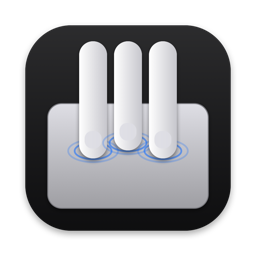

Tres dedos
- Toque
- Click del botón del medio: abre links en otra pestaña y cierra pestañas.
- Arriba o abajo
- Mission Control y App Exposé.
- En el borde derecho
- Arriba o abajo cambia el brillo. El ancho de esa zona se elige en los ajustes.

Más gestos para el trackpad y atajos para el teclado. Vive en la barra de menús y cada función se prende o se apaga en un click.
Una app de  SSCG
SSCG
Tres dedos
Cuatro dedos
Teclado
Ventanas y Finder
Todo se prende o se apaga por separado en los ajustes, desde el ícono de la barra de menús.
Abrí el archivo descargado y arrastrá Express Gestures a Aplicaciones.
Abrila. Aparece el ícono de una mano en la barra de menús.
Dale el permiso de Accesibilidad cuando te lo pida: sin él no puede simular clicks ni teclas.
En Ajustes del Sistema › Trackpad › Más gestos, apagá Mission Control y App Exposé para que no choquen con los de la app.
Las actualizaciones llegan solas: una vez por día revisa si hay una versión nueva y te pregunta antes de instalarla.
Express Gestures no junta ni envía ningún dato. Lee el trackpad y el teclado solo para reconocer los gestos, en tu Mac, sin guardar nada.
La única conexión que hace es revisar una vez por día la lista de versiones en esta página. Se puede apagar en Ajustes › General.